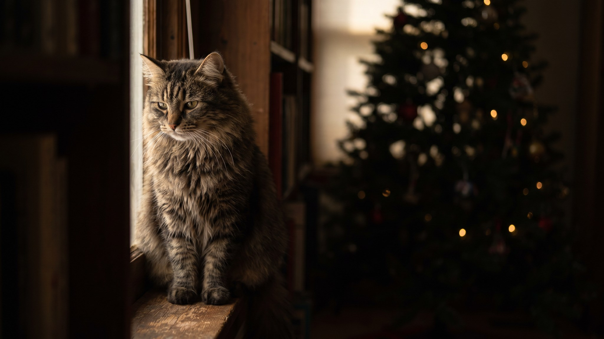

Вы вешаете последний шарик, отходите на шаг полюбоваться — а кошка уже карабкается по стволу, и дерево опасно кренится. Для неё ёлка — это высокое дерево с качающимися блестящими штуками, то есть сразу и вышка для обзора, и охота, и игрушка. Запрещать бессмысленно: инстинкт сильнее команды. Но ёлку можно поставить так, что она устоит, а кошке будет не так интересно. Ниже — почему её тянет на ёлку и что сделать заранее.
🐾 Что делать, если что-то пойдёт не так
AnimaLife подскажет первые шаги при отравлении, травме, перегреве или укусе — ещё до того, как вы доедете до врача. Пусть будет под рукой.
Открыть первую помощь → Открыть в MAX →
У вас iPhone? AnimaLife есть в App Store
Дело не во вредности. Ёлка нажимает сразу на несколько кошачьих «кнопок»:
Главный риск — не само дерево, а украшения, которые кошка может проглотить или уронить:
Чем насыщеннее день у кошки, тем меньше её тянет на ёлку от скуки. Дайте легальные альтернативы: когтеточку-столбик повыше рядом, пару новых игрушек, активную игру перед сном, чтобы к вечеру энергия уходила в дело. А ёлку на время вашего отсутствия в комнате проще прикрыть дверью, чем надеяться на самоконтроль.
🐾 Поставьте приложение заранее
Первая помощь, дневник здоровья и AI-ветеринар 24/7 — в одном месте. Бесплатно: установите, пока не понадобилось.
Установить AnimaLife → Открыть в MAX →
У вас iPhone? AnimaLife есть в App Store
🐾 Понравился разбор?
Подпишитесь на канал — каждый день разбираем по одному тревожному симптому у кошек и собак: что в пределах нормы, а когда пора к врачу. Подпишитесь, чтобы не пропустить разбор, который может спасти здоровье вашего питомца.
Материал носит информационный характер и не заменяет очную консультацию ветеринара.